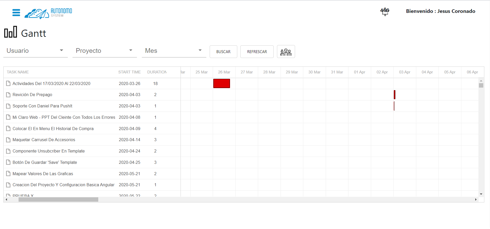
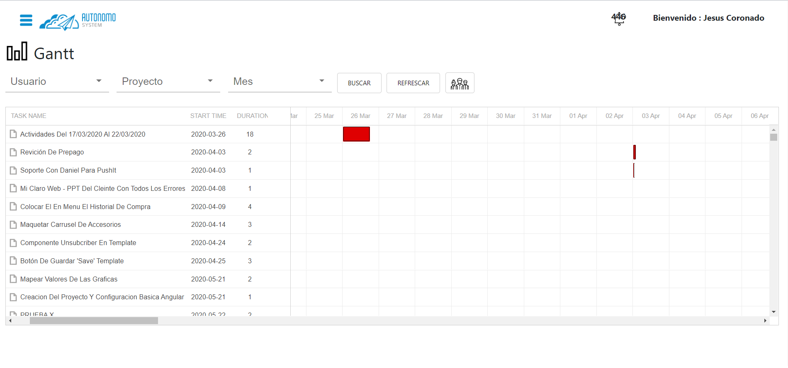

Mobile and Web Applications
We offer web solutions for companies, creation of professional websites, for mobile devices and
computers, according to your budget, with support and improvement plans as its development passes over
time.
Designs updated to market trends in 2020 Web pages with high response speed Available for all kinds of browsers such as, Google chorme, mozila Firefox, safari, and others. Support and warranty for each product Developments for mobile web users and applications for the AppStore and PlayStore
Web developments We develop web environments in Angular 9 where your applications will look spectacular. Due to being a cutting-edge framework, this also allows it high support for updates to the latest on the market.
Advice on hosting choice Web solutions management Integration with existing systems in your company

Designs updated to market trends in 2020 Web pages with high response speed Available for all kinds of browsers such as, Google chorme, mozila Firefox, safari, and others. Support and warranty for each product Developments for mobile web users and applications for the AppStore and PlayStore
Web developments We develop web environments in Angular 9 where your applications will look spectacular. Due to being a cutting-edge framework, this also allows it high support for updates to the latest on the market.
Advice on hosting choice Web solutions management Integration with existing systems in your company
Cloud Storage
Cloud storage is a tool that provides the needs at the database level, guaranteeing the consumption of
Web services, using cloud services such as Google Cloud Platform, Amazon Web Services and many more
recognized platforms, thus obtaining greater security at the storage level of data.
Types of accommodation that uses multiple servers. The main benefits of Cloud hosting include an increased emphasis on uptime, isolated resources, ease of scale, and a dedicated IP address.

Types of accommodation that uses multiple servers. The main benefits of Cloud hosting include an increased emphasis on uptime, isolated resources, ease of scale, and a dedicated IP address.
Digital Marketing
Digital Marketing is the set of strategies aimed at promoting a brand on the internet. It differs from
traditional marketing in that it includes the use of channels and methods that allow the analysis of
results in real time.
We carry out platforms at the level of marketing campaigns, with the purpose that customers can obtain offers from your business, based on the correct logic to create advertising campaigns.
It is a strategy with the objective of attracting new businesses, which develops a new brand identity. Strategies where they are directed to the subject of communication and marketing of goods and services.
The advantage offered to the client is to be able to communicate directly to the public to arrive at an appropriate moment when giving the publicity that is offered. It can be related to organizations taking into account the cultural, psychological, geographic, and legal factors that influence people when buying or selling a product or service.
We carry out platforms at the level of marketing campaigns, with the purpose that customers can obtain offers from your business, based on the correct logic to create advertising campaigns.
It is a strategy with the objective of attracting new businesses, which develops a new brand identity. Strategies where they are directed to the subject of communication and marketing of goods and services.
The advantage offered to the client is to be able to communicate directly to the public to arrive at an appropriate moment when giving the publicity that is offered. It can be related to organizations taking into account the cultural, psychological, geographic, and legal factors that influence people when buying or selling a product or service.
Create a Store
We develop your tailored online store with options for expansion. Our main objective is to develop pages
that grow according to your company.
We achieve this thanks to modular programming, with this you can choose relevant sections for the start, development and post-delivery product of your application in order to reduce your initial investment costs and grow at your own pace on this platform.
We generate solutions from the total design of your website as integration of additional services to automate your processes.
• Cloud storage: We offer administration services for your domains and cloud storage.
• Total and functional deliveries of your product: We stand out for delivering satisfactory products to the client which allow generating sales from the moment of publication without the need for extra configurations, as a minimum we offer availability of 5 products of your choice for sale.
• Product publication system: We offer a space where you can modify, add or remove your products from the stores, thanks to this you will have a flexible system that helps you to have a constant inventory rotation according to your wishes.
• SSl Certificate: For no online store it is a secret that security is the most important thing, we offer an SSL certificate so that you have the confidence that your products sell correctly and your customer is satisfied with your purchase.
• No limit on the sale of products: Our solutions grow with you and the administration systems will be available at all times if your page begins to grow in sales.
• Low cost: One of the great challenges for all companies is to reduce development costs, for this we evaluate alternatives regarding what is available with the user and their initial budget, in order to make it accessible to them to obtain a website with us and to be able to grow from according to your needs.
We achieve this thanks to modular programming, with this you can choose relevant sections for the start, development and post-delivery product of your application in order to reduce your initial investment costs and grow at your own pace on this platform.
We generate solutions from the total design of your website as integration of additional services to automate your processes.
• Cloud storage: We offer administration services for your domains and cloud storage.
• Total and functional deliveries of your product: We stand out for delivering satisfactory products to the client which allow generating sales from the moment of publication without the need for extra configurations, as a minimum we offer availability of 5 products of your choice for sale.
• Product publication system: We offer a space where you can modify, add or remove your products from the stores, thanks to this you will have a flexible system that helps you to have a constant inventory rotation according to your wishes.
• SSl Certificate: For no online store it is a secret that security is the most important thing, we offer an SSL certificate so that you have the confidence that your products sell correctly and your customer is satisfied with your purchase.
• No limit on the sale of products: Our solutions grow with you and the administration systems will be available at all times if your page begins to grow in sales.
• Low cost: One of the great challenges for all companies is to reduce development costs, for this we evaluate alternatives regarding what is available with the user and their initial budget, in order to make it accessible to them to obtain a website with us and to be able to grow from according to your needs.
Manage your projects
We offer our project management system, with this you can carry generate productivity reports, costs,
time analysis for each project you have at your disposal, carry out a complete control of your workers
and the activities that are carried out on a daily, biweekly basis. , monthly or annual in your company,
with this evaluate the effectiveness of each worker group or area of your company and if you wish we
can also develop a specialized management system for your company which develops reports according to
your need, reduce your management times in your company and have the necessary information at hand so
that you can make decisions in real time according to the operation of your company.



Infrastructure
We have a necessary infrastructure at the project level, using the latest versions of the servers with
the highest quality standards, guaranteeing the security of the data information and content provided on
the website.

Business Intelligence
The business world is based on strategic decision making. What makes the difference between a successful
company and another that does not, is the correct and timely decision making. To be able to do this in
the best way, it is essential to have the adequate information and in time that supports all the
management of the company's operations in an agile and fast way.
Business intelligence (BI) is the set of processes, applications and technologies that facilitate the quick and easy obtaining of data from business management systems for analysis and interpretation, so that they can be used for data collection. decisions and become knowledge for those responsible for the business.
It consists of a set of business management techniques that allow an organization to make business decisions based on data, which have been treated by different tools to convert them into information.
Therefore in terms of their differences: while Big Data focuses on the capture, storage and processing of data, Business Intelligence focuses on the analysis processes of such data to convert it into information and make the appropriate business decisions.

Business intelligence (BI) is the set of processes, applications and technologies that facilitate the quick and easy obtaining of data from business management systems for analysis and interpretation, so that they can be used for data collection. decisions and become knowledge for those responsible for the business.
It consists of a set of business management techniques that allow an organization to make business decisions based on data, which have been treated by different tools to convert them into information.
Therefore in terms of their differences: while Big Data focuses on the capture, storage and processing of data, Business Intelligence focuses on the analysis processes of such data to convert it into information and make the appropriate business decisions.